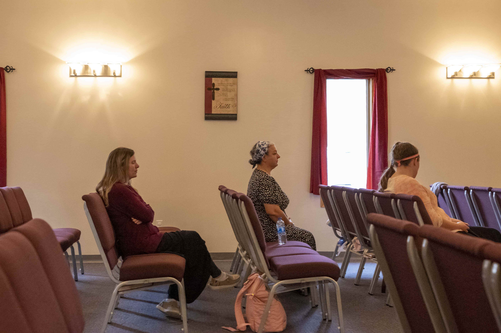
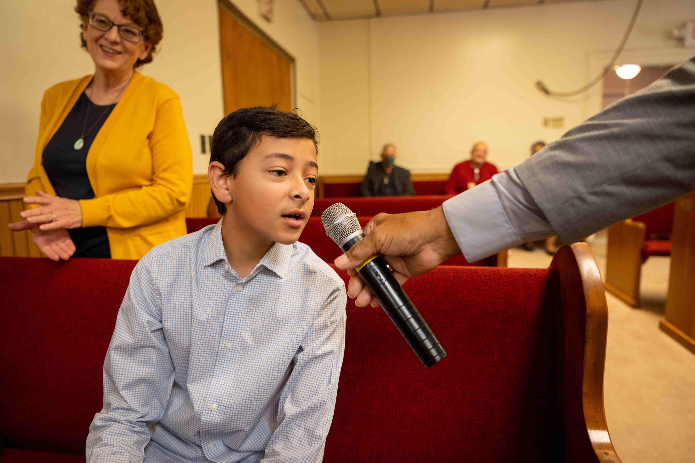
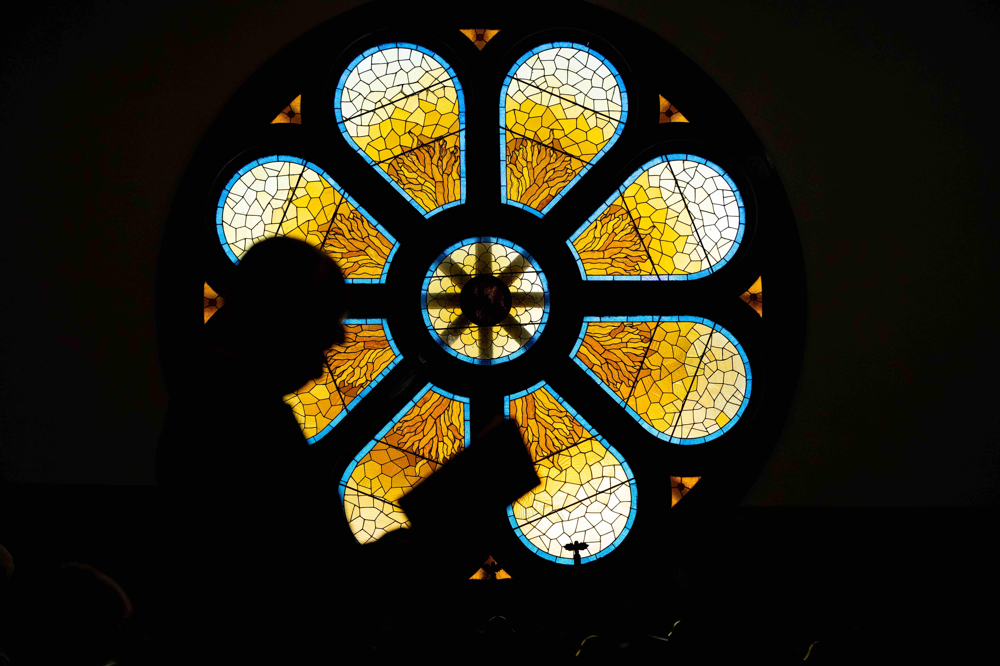
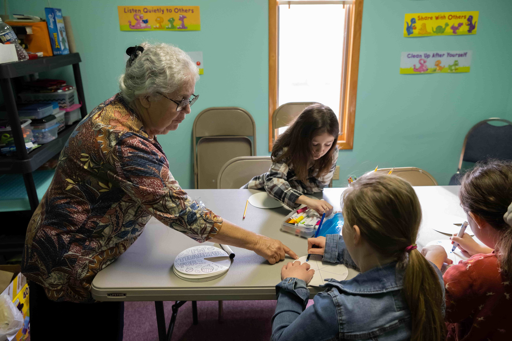

Fading Faith
Membership loss and a decrease in funding
has become a
commonality among churches in Appalachia
Ryan Grzybowski
Deep in the hills of Appalachia sits Stewart United Methodist Church. In a parish in Southeast Ohio, Pastor Rick Seiter leads a service for a mere seven members.
Due to membership attendance and limited UMC pastors in the area, Seiter travels between Stewart United Methodist and Canaanville United Methodist each Sunday to ensure both churches have a service
"We'd like to know why people aren't coming to church anymore," Seiter said.
Deep in the hills of Appalachia sits Stewart United Methodist Church. In a parish in Southeast Ohio, Pastor Rick Seiter leads a service for a mere seven members.




Deep in the hills of Appalachia sits Stewart United Methodist Church. In a parish in Southeast Ohio, Pastor Rick Seiter leads a service for a mere seven members.
Due to membership attendance and limited UMC pastors in the area, Seiter travels between Stewart United Methodist and Canaanville United Methodist each Sunday to ensure both churches have a service
"We'd like to know why people aren't coming to church anymore," Seiter said.
Deep in the hills of Appalachia sits Stewart United Methodist Church. In a parish in Southeast Ohio, Pastor Rick Seiter leads a service for a mere seven members.

Campus Ministry
Students at Ohio University often find it difficult to find a place to practice their faith with fellow
students in Athens.
Madeline Daley, a sophomore studying media arts production, is a part of OU Catholics. Her choice to
continue practicing her faith in college has led her to partake in religious student organizations on
and off campus.
"I just saw a lot of relativism in the world," Daley said. "Just the ability to ask questions … made it
so that the truth was able to be communicated, and I could see that there isn't relativism with the
Catholic Church."
Her religion inspired her to connect with like-minded individuals on campus with OU Catholics. Though
many college students may shy away from religious organizations on campus, Daley said she remains
optimistic about students' future.
"I see hope for students actually seeing that Catholicism is alive and current, and not an archaic
belief," Daley said. "It can actually help with all aspects of someone's life."

